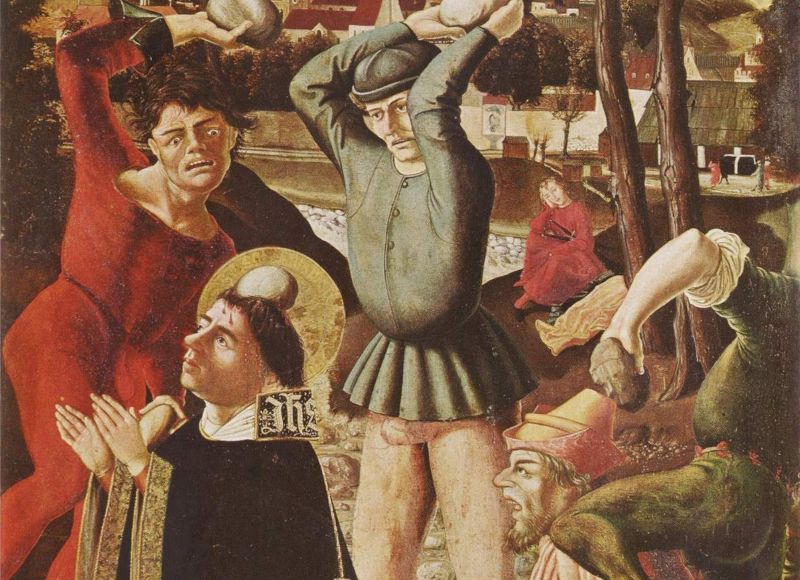

A problem with learning in public is keeping a strong note of how to avoid heresy. Back in the seventeenth century, if you said anything against God, even if the statement were true, you would be penalised. Sometimes it meant death. It didn’t matter if the statement was true. If you don’t believe me, just ask Galileo.
Today, we seem to be going back to those ideals. The “mass”, which is difficult to identify, would put you on Twitter trials. Twitter — like a true public square — would decide based on majority opinion, not the truth. Like all public justices, these moments are moments of power exertion rather than an attempt to arrive at the truth.
And what is truth anyway? Are Twitter users with no name and face with a million followers ambassadors of truth? Does getting a thousand likes make a statement the truth? In some cases, yes. In others, no. What does it depend on? Heresy.
When a person says an argument is “x-ist”, they implicitly imply that’s the end of the discussion. They usually do not explain why the argument is “x-ist”. Even if they do, they miss the point: is the argument true? In fact, one of the reasons why these labels are used is because they’re means to an end. A device to avoid discussion.
These devices have collateral damage. The person in question might lose their jobs, face or both. These “x-ist” blames discounts on everything else that the speaker has done. Somehow, this one (assumed) blunder overtakes all their positive contribution to society.
This heresy is also judged differently than other ideas. If I say I have a bad taste, I’ll still live to see another day. But if I say something about Transgender people, I’m suddenly the worst person alive. I will at least get cancelled.
‘People who menstruate.’ I’m sure there used to be a word for those people. Someone help me out. Wumben? Wimpund? Woomud?
— J.K. Rowling (@jk_rowling) June 6, 2020
Opinion: Creating a more equal post-COVID-19 world for people who menstruate https://t.co/cVpZxG7gaA
This is no different from seventeenth-century Papal rule or many Arabic countries today. These days, it usually costs people their jobs. The outcome is usually less severe in the short term but far more intense in the long term.
A crime is a crime is a crime. No matter what good you did, you’ll be in jail if you break a rule. Today, heresy is the same. The cost of having an unacceptable opinion, albeit true, is high.
The information age has accelerated how much information is available at our disposal. It has also increased how much exposure I have. What I do gets registered permanently - even the Government of India warns me to think twice before posting something online. This public attitude is certainly a degradation. Having some opinions is not only considered mistaken but guilty - asking for punishment.
Why is the centuries-old phenomenon seeing a sudden rebirth?
Good question. First, let’s understand who are the intolerant people who make a maverick’s life miserable. If there was a 2x2 grid to describe people, one axis could be independent mindedness; the other axis could be aggressiveness of opinions.1
Aggressive people are those who assert their opinions heavily. Passive people would rather listen and be sheep about it. A majority of them are somewhere in the middle of the spectrum. But like all things, the right-end aggressive would be the first to express their opinions. Independent-minded people base their thoughts on currently available facts. Current is fresh: experience is the only valid evidence. Orthodox people are conventional-minded; they value traditions over innovation.
Being independent minded is hard. Thinking is not easy, let alone thinking for ourselves. Giving advices isn’t the way out when you have skin in the game. Ralph Waldo Emerson agrees. Here’s a lucid podcast if you’re not in a mood to read.
People in the top-right quadrant are the ones I’m wary of. When I see distant signs of that, I will avoid speaking with them about anything more than what I absolutely have to do. How to identify them? They think the way to change the world is to be judgemental about other people. They like to “call out” on people with utter disregard for everything else they have to say.
Another reason why we’re seeing a rebirth of them is something that’s dear to me: the internet.2 There were always intolerant people, no matter how far you go back in history, in any society with a reasonably large population. But transpiring information from one section to the next was hard. Now, there’s Twitter.
I have a simple rule for interactions online. My limit for textual arguments is three exchanges. If I can’t convince the other person, or they can’t convince me in three notes, I invite them to have a face-to-face conversation.3 We could meet in person, via video call, or a phone call — in that order of preference. The fourth message is, “Sorry, I don’t argue online with more than three messages. Let’s meet in person to take this further”.
This rule has saved me countless hours of fighting with keyboard warriors. You wouldn’t believe how common it is for people to back down at this stage. The ease of typing makes people believe they have stronger opinions than they have. To date, only two people have ever taken up the offer to meet in person. In the first case, we agreed we were in value disagreement, which makes us both right in our places. In the second case, we realised we weren’t really in a conflict.
In many cases, the stone-pelters are just mean people. There is no dearth of mean people. Meanness isn’t rare. In fact, one of the things the internet has shown us is how mean people can be.4 A few decades ago, only famous people and professional writers got to publish their opinions. Now everyone can, and we can all see the long tail of meanness that had previously been hidden.
There’s one important difference between the old and the new wave. The intolerant activists in the seventeenth century came from the right-aligned groups; today, they come from left-aligned groups.
Why? Heresy requires purist viewpoints. Back in the 16th century, orthodox viewers supported strict Christian doctrines. Today, most youngsters do not believe in god. As Sadhguru said, heaven has collapsed. Youngsters believe in moral and ideological purity. The right is slowly catching up, though.
Personally, what I am worried about is what happens when I get called out. I don’t take my life seriously, period. I’m afraid I’ll likely respond to them on a comical note. Perhaps also with a link to this essay. Hopefully, I don’t end up like Dave Chappelle’s friend Daphene Dorman who committed suicide trying to defend Dave from the Trans community.
Be curious. Not judgmental.
- Walt Whitman5
This model comes from Paul Graham’s essay: The Four Quadrants of Conformism.↩︎
Anil Dash’s talk on “The Web We Lost” describes this perfectly.↩︎
This is for text messages, usually on WhatsApp. If it were on letters or emails, I might think differently. Indians love arguing. My family would routinely discuss politics, policy, life philosophy and just about anything in our WhatsApp group. When we get together in person, it’s no different. Just bring up one new government policy and you’d see clashes from both ends. Most of it is superficial: we don’t carry our disagreements on politics to heart and happily share dinners and dances later.↩︎
An example of meanness from the early days of internet is the story of Hunter Moore who used to run WhoIsUp — a revenge porn website. He had the audacity to join a talk show while sharing the stage with women whose lives had been devastated by the website.↩︎
The quote is apparently misattributed. Whatever.↩︎